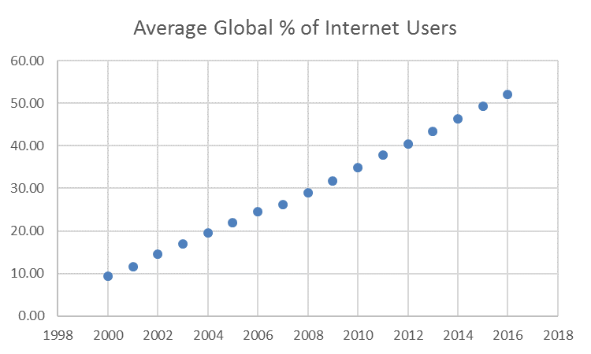

The Structure of the Internet
Section 4: History

As shown in the graph above, the percentage of global internet users has dramatically increased since 2000.
The graph above shows the internet speed of a modem from 1993, compared to a modem from 2018. The innovations in networking technology have absolutely eclipsed earlier technologies!